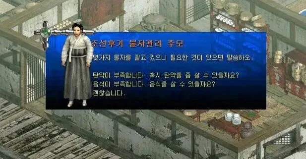
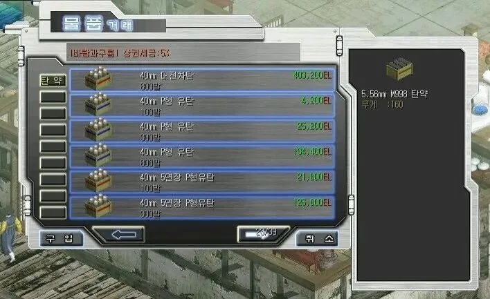

이터널시티 오랜만이네 아직도 운영하나?
놀랍게도 1,2,3 다 운영중임 ㅋㅋ
3가 진짜 아포칼립스임 유저가 안보임 ㅋㅋㅋㅋ
마을에는 사람 많던데 ㅋㅋㅋ
한 50명 쯤 있는듯... 어썰트때 빼곤 하루 10명 봐 그리고 용병 가챠 확률업좀 해줬으면 ㅜ ㅜ
셋다 했었는데 결국 1이 제일 나았어
빠른속도&점프무적&1대맞음 죽음이라는 극단적인 사냥법이 개꿀잼이었는데 2에서는 느린 속도&맞으면 슬로우 하더니 개작살나고 3에서는 1에선 없던 대규모 전투 끌어왔는데 결국 식어버렷지
명성황후 어설트는 인종 ㅋㅋ
1이 제일 명작이고 뒤로 갈수록 구려졌지
동동주 다산다
이모 오늘 국밥은 대전차탄으로 말아주세요
이터널시티1 존나 재밌게 했었지ㅋㅋㅋ막 총검 바꿔쓰면서 연사한 기억
1 리메이크 해주면 좋겠네
이 게임을 안 해봤는데, 아래 짤은 NPC 상점 맞음? 값이 들쭉날쭉인데
탄약 수에 따라서 값이 다름
100발에 4,200EL인데 800발에 134,400EL이라는 건 어느 나라 셈법이여
인벤토리 칸수때문에 그럼
ㅇㅎ ㄱㅅㄱㅅ
캬 이터널시티 ㅈㄴ 꿀잼이였는데 ㅠ
저 세계관에선 타임머신이 상용화돼서 주모도 미래에서 물건 떼오는걸로 생각해야함 ㅋㅋ
소이탄 팍팍 넣어서 얼큰하게!!!
이터널시티 1은 아직도 해보면 재미있더라 근데 뉴비 탈출하기가 너무 힘듬 ㅋㅋ
라니쁜이라는 씨발새끼 아직도 안잊혀지네
0빼기 사기 쳐서 초4 내 영혼의 m4 털어가고
잠수탄 씹새끼
래피드샷건 뽕맛을 잊을수가없다
고관통탄이네
하 조선 미친놈들 어떻게 일본한테 진 거냐
애들이 총맞아도 잘안죽더라고
이러고도 일본에게 당하다니